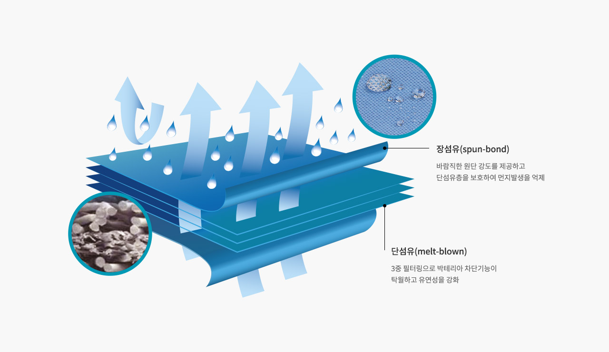
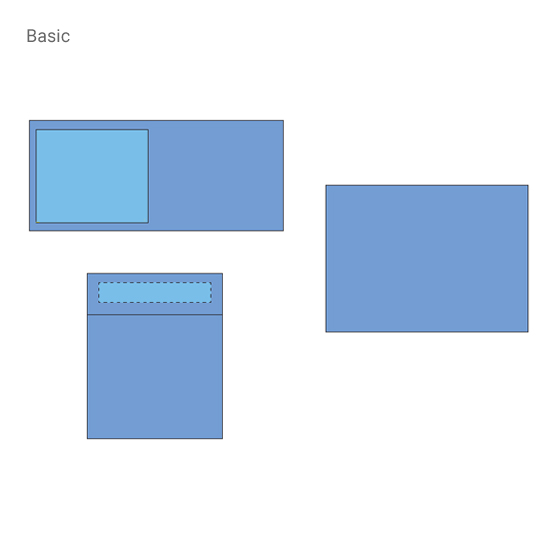
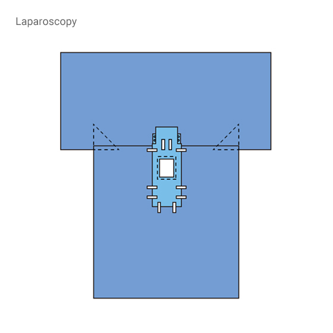
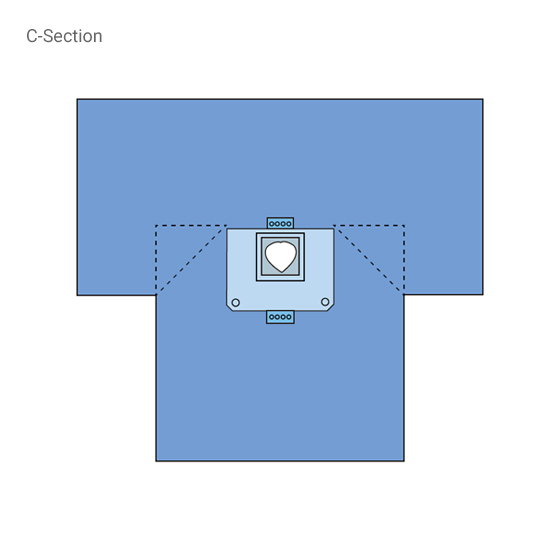
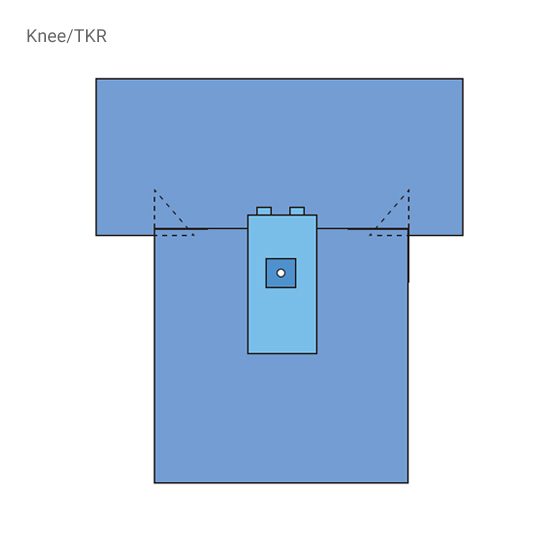
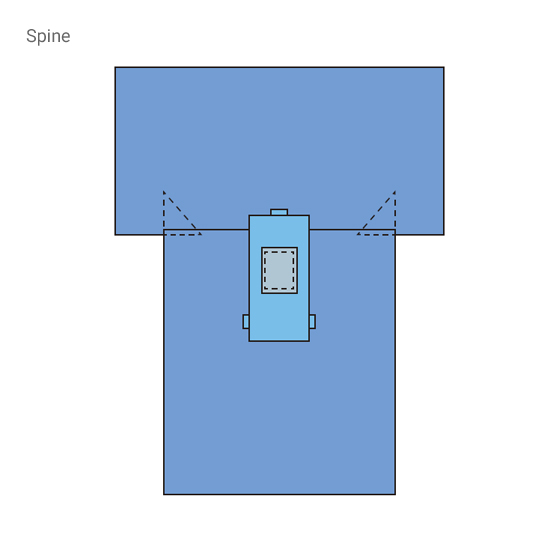
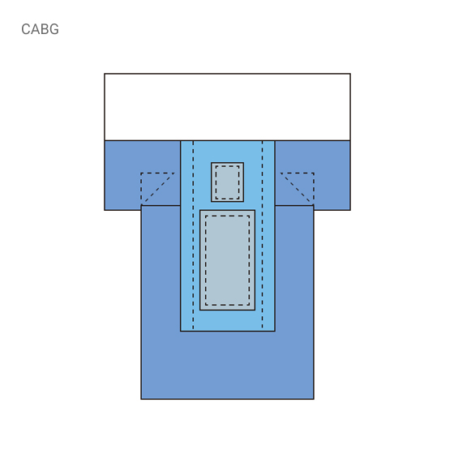
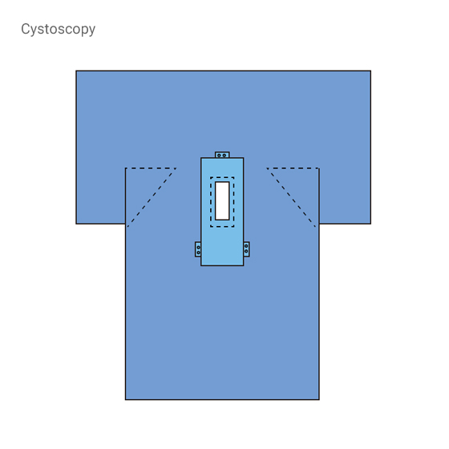
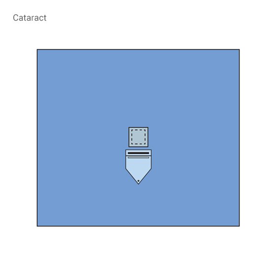
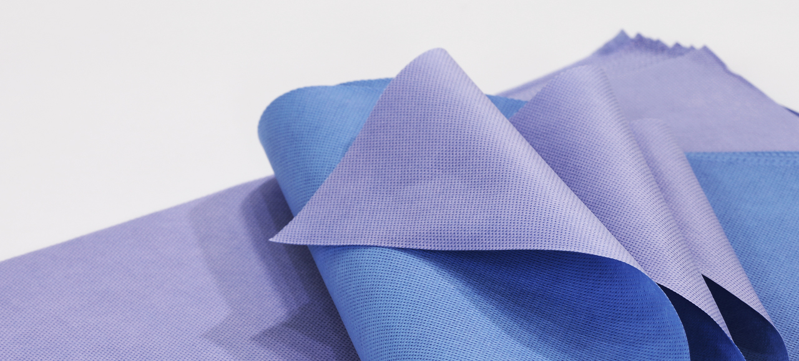

수술포 · 멸균포
세종헬스케어의 수술 부위별 맞춤형 수술포와 정밀 의료기기 멸균 포장재를 공급합니다.
수술포 · 멸균포 & 수술팩
Surgical Drapes, Specialty Packs & Sterilization Wrap
진료과·수술 부위별 최적화된 맞춤 설계와 감염 차단 Spun-Melt 원단 기술을 적용하여
의료진에게는 수술의 편의성을, 환자에게는 안전하고 쾌적한 멸균 수술 환경을 보장합니다.

최고급 Spun-Melt 원단의 특성
세종헬스케어의 수술가운과 수술포는 엄선된 고품질 Spun-Melt 다층 부직포로 제조됩니다. 뛰어난 방수성, 내혈성 및 항균 성능으로 혈액·체액 누수를 완벽히 차단하며 우수한 통기성을 제공합니다.

완벽한 감염 차단과
의료진·환자를 위한 쾌적성
Spunbond 층이 뛰어난 인장 강도와 내구성을 제공하고, 초극세 Meltblown 층이 미세 박테리아와 바이러스, 수분을 촘촘하게 여과합니다. 장시간의 수술 중에도 체액 침투를 완벽히 막아내며, 뛰어난 공기 투과성으로 쾌적한 수술 환경을 유지합니다.
- 완벽한 차단 기능 — 높은 정수압, Blood Repellency 및 뛰어난 항균력
- 우수한 통기성 — 장시간 착용 및 덮개 시에도 편안함 유지
- 고강도 & 낮은 보풀 — Lint 발생을 억제하여 수술 부위 이물질 오염 방지
혈액·체액 흡수 방어
혈액 및 각종 소독 용액의 흡수를 방어하여 교차 오염 및 매개 감염을 원천 차단합니다.
먼지·보풀 최소화
미세 보풀 및 먼지 발생을 극소화하여 감염 오염율을 낮추고 정밀 수술기구 수명을 보호합니다.
미생물·세균 차단
오염 및 감염원으로부터 수술 부위를 효과적으로 격리하여 완전한 무균 멸균 상태를 유지합니다.
정전기 방지 처리
정전기 발생에 따른 수술실 정밀 전자기기 오작동을 예방하고 공기 중 먼지 흡착을 방지합니다.
소독액 발수 유지력
Alcohol 또는 Iodine 등 소독약제에 노출되어도 원단의 고유 발수·차단 기능이 손상되지 않습니다.
진료과별 일회용 수술포 & 맞춤 수술팩
수술 부위 및 시술 유형에 따라 구성된 일회용 멸균 드레이프 팩으로, 수술 준비 시간을 획기적으로 단축시키고 수술 중 감염 위험을 최소화합니다.

기본 / 외래 처치기본 수술포 & 셋업 팩
외래 시술, 기본 처치, 조직 생검(Biopsy) 및 표준 외과 셋업에 필요한 올인원 멸균 드레이프 팩입니다.
- Basic Pack / Setup Pack
- Minor Pack / Universal Pack
- Biopsy Pack (생검 전용)

복강경 / 일반외과복강경 & 일반외과 팩
복강경 트로카 삽입부 전용 절개창과 체액 포집 파우치, 튜브 홀더가 일체화된 고기능 외과 팩입니다.
- Laparoscopy Pack (복강경 전용)
- General / Transverse Laparotomy
- Thyroid Pack / Breast Pack

산부인과 (OBGY)제왕절개 & 산부인과 팩
대용량 양수·혈액 흡수 패드 및 눈금형 체액 수집 파우치, 절개용 점착 필름이 통합된 분만 전용 팩입니다.
- C-Section Pack (제왕절개 전용)
- Normal Delivery Pack (자연분만)
- Lithotomy / LAVH / IVF Pack

정형외과 (Ortho)인공관절 & 정형외과 팩
무릎 인공관절(TKR), 고관절(Hip), 사지 관절 수술 시 세척액 포집 파우치와 탄성 슬리브가 결합된 팩입니다.
- Knee Pack / TKR Pack
- Hip Pack / Shoulder Pack
- Limb / Hand / Foot & Ankle Pack

척추 / 신경외과척추 & 신경외과 팩
척추(PELD/Lumbar) 및 뇌신경 수술 시 세균 침투를 완벽히 막고 멸균 영역을 안정적으로 유지합니다.
- Spine Pack / PELD Spine Pack
- Craniotomy Pack (개두술 전용)
- NS Basic Pack / Lumbar Pack

심혈관 / 조영술심혈관 & 혈관조영술 팩
관상동맥우회술(CABG), 개심술, 중심정맥관(C-Line) 및 대퇴·요골동맥 조영술 전용 수술 드레이프입니다.
- CABG Pack / Open Heart Pack
- Femoral / Radial Angiography
- Chemo Port / Pacemaker Pack

비뇨기과 (Urology)비뇨기과 & 방광경 팩
경요도 전립선 절제술(TUR), 방광경 시술 및 로봇 전립선 수술 시 연속 세척액 집수 및 여과를 지원합니다.
- TUR Pack / Cystoscopy Pack
- Nephroscopy Pack / Lithotomy
- Robotic Prostate Pack

안과 / 이비인후과안과 & 이비인후과 팩
백내장(Cataract) 및 유리체절제술, 안면·이비인후과 수술 시 환자 호흡을 방해하지 않는 정밀 드레이프입니다.
- Cataract Pack / Vitrectomy
- Strabismus / Entropion Repair
- Facial Pack / Ear & Nose Pack
세종헬스케어 2-Tone 멸균포
멸균을 위해 요구되는 엄격한 물리적 강도와 박테리아 차단성을 완벽히 충족하는 고밀도 5중 SMMMS 소독·멸균포입니다.

투톤(Two-Tone) 컬러로 멸균 작업 효율 극대화
전면 청색(Blue) / 후면 보라색(Purple)으로 구분되어, 표준 이중 포장 시 내·외 포장 상태를 즉각 확인하고 멸균 오류를 방지합니다.
고밀도 5중 SMMMS 원단의 강화된 멸균 차단력
초극세 3중 Meltblown 필터가 미세 세균과 바이러스를 완벽 차단하며, 원단 자체의 높은 발수성으로 먼지 흡착 및 액체 오염을 방지합니다.
Steam 및 EO Gas 침투성 & 빠른 건조
증기(고압증기멸균) 및 EO(에틸렌옥사이드) 가스가 원활하게 침투하며 건조 속도가 빨라 멸균 프로세스 시간을 최적화합니다.
진공 압축 분할 포장으로 보관 공간 최소화
비닐백에 나누어 진공 압축 포장되어 병원 중앙공급실(CSR) 및 수술실 내 보관 부피를 획기적으로 줄여줍니다.
멸균포 규격 및 포장 단위 (Packaging Specifications)
| 주문 코드 (Order Code) | 규격 (Size, cm) | 박스당 수량 (SH / Box) | 진공백 포장 단위 (Poly Bag) |
|---|---|---|---|
| JSWG04 / JSWT04 | 40 × 40 | 500매 | 250매 × 2 Bag (진공 압축) |
| JSWG05 / JSWT05 | 50 × 50 | 500매 | 250매 × 2 Bag (진공 압축) |
| JSWG06 / JSWT06 | 60 × 60 | 500매 | 250매 × 2 Bag (진공 압축) |
| JSWG07 / JSWT07 | 70 × 70 | 300매 | 150매 × 2 Bag (진공 압축) |
| JSWG09 / JSWT09 | 90 × 90 | 150매 | 150매 × 1 Bag (진공 압축) |
| JSWG11 / JSWT11 | 110 × 110 | 150매 | 150매 × 1 Bag (진공 압축) |
| JSWG13 / JSWT13 | 130 × 130 | 100매 | 50매 × 2 Bag (진공 압축) |
수술포 및 멸균포 종합 사양표
병원 수술실 및 외래 환경에 맞추어 다양한 규격과 패키지로 안정적으로 공급됩니다.
| 품목군 | 적용 수술 / 용도 | 원단 소재 | 핵심 특성 | 포장 단위 |
|---|---|---|---|---|
| 전신 맞춤 수술포 팩 | 전신마취 외과 수술 (개복·복강경·흉부) | SM(MM)S 부직포 | 체액 포집 파우치, 튜브 홀더 일체형 | 1세트/개별 멸균팩 |
| 산부인과 전용 팩 | 제왕절개(C-Section), 자연분만 | SMS + 고흡수 패드 | 눈금형 체액 수집백, 절개용 점착 필름 | 1세트/개별 멸균팩 |
| 정형외과 관절 팩 | 인공관절(TKR/Hip), 사지·척추 수술 | 고강도 SMMMS | 탄성 고무 슬리브, 세척액 드레인 포집백 | 1세트/개별 멸균팩 |
| 심혈관 / 조영술 팩 | 관상동맥우회술, 대퇴/요골 혈관조영술 | SMS 부직포 | 방사선 투과창, 다공형 천공 셋업 | 1세트/개별 멸균팩 |
| 비뇨기과 / 안과 팩 | TUR, 방광경, 백내장(Cataract) 수술 | SMS 부직포 | 세척액 배출 파우치, 액체 여과망 장착 | 5~10매/박스 |
| 2-Tone 멸균포 (시트) | 의료기기 멸균 및 중앙공급실(CSR) 포장 | 5중 SMMMS | 블루/퍼플 투톤 식별, 고압증기·EO가스 호환 | 100~500매/박스 |
※ 병원 맞춤형 전용 패키지(Custom Pack) 구성 및 대량 납품 문의는 준메디칼 영업팀으로 문의 바랍니다.
※ 제조원: ㈜세종헬스케어 (SEJONG HEALTH CARE, 대한민국) · 공급원: 준메디칼 주식회사